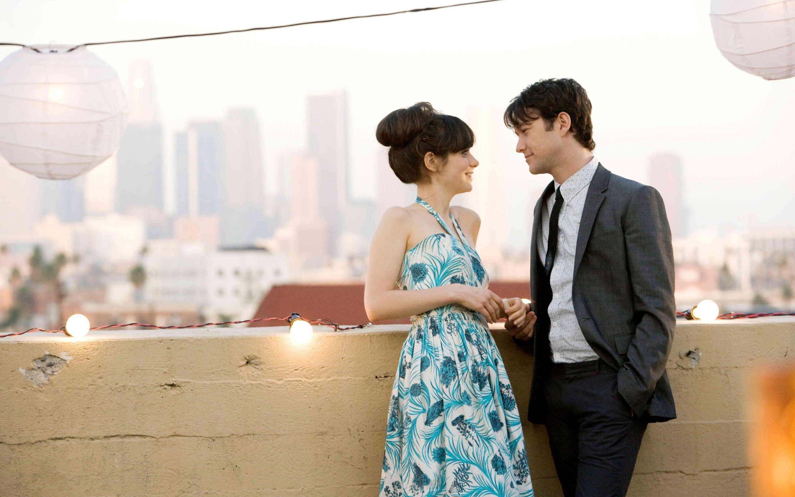
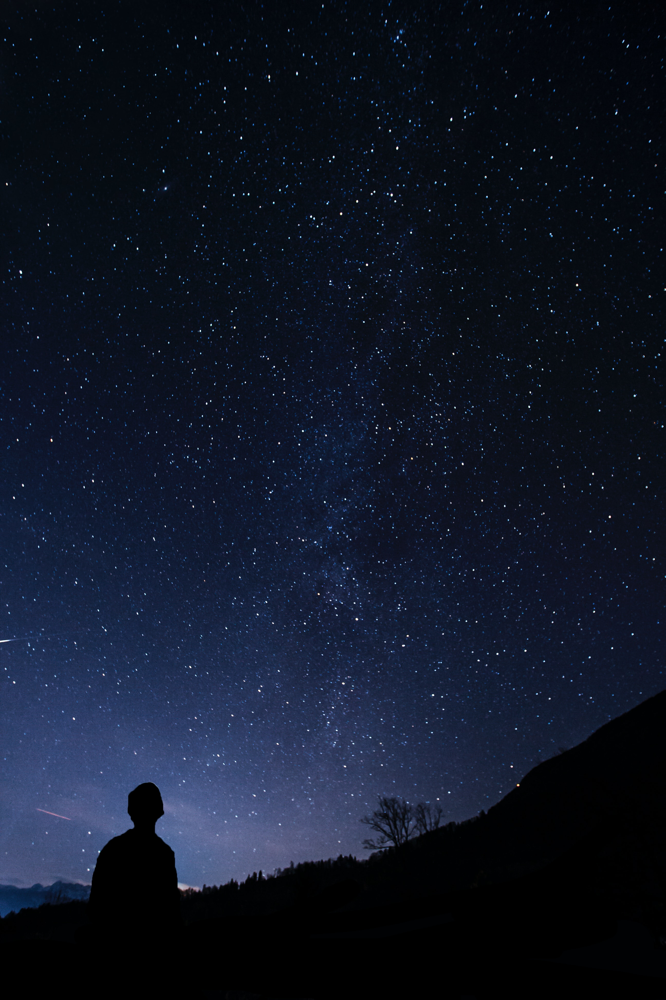
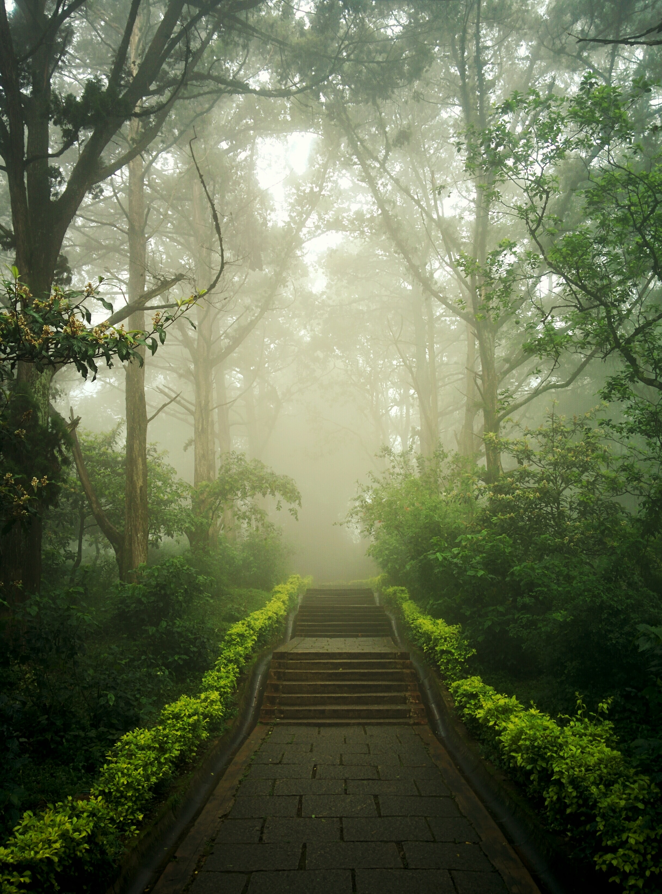
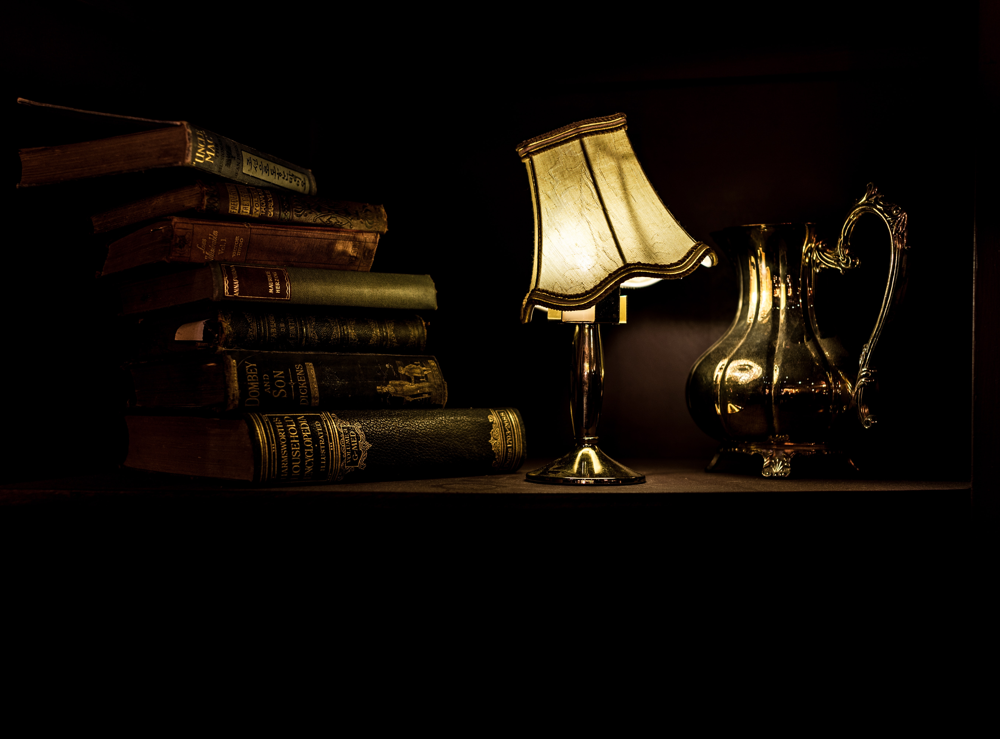
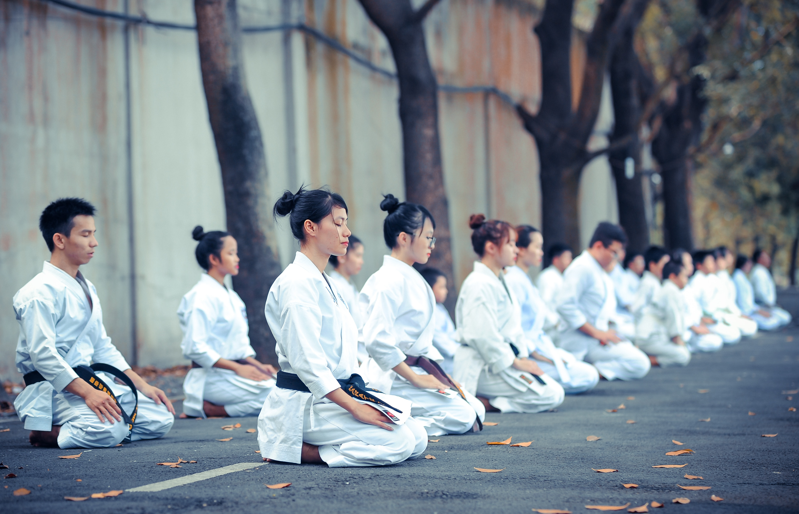
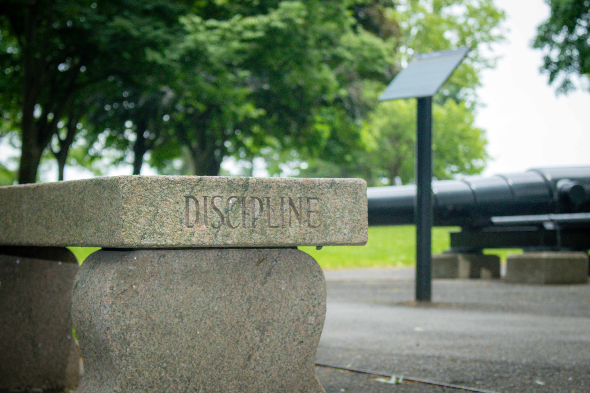
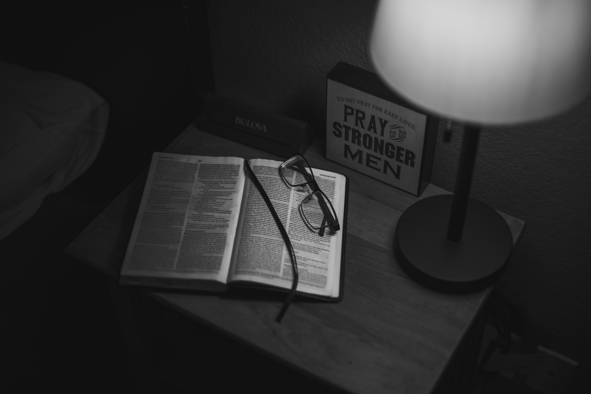
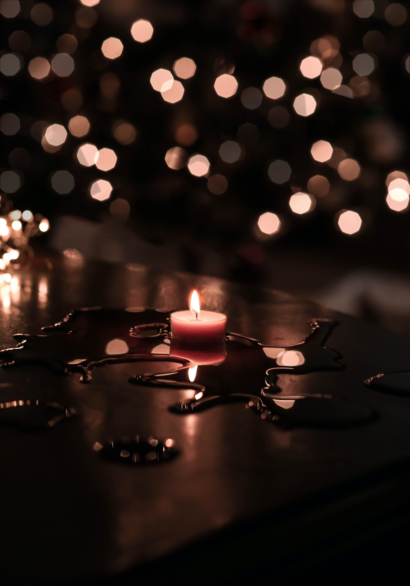
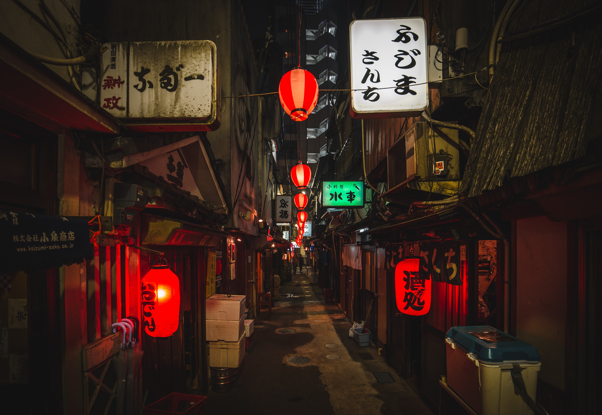
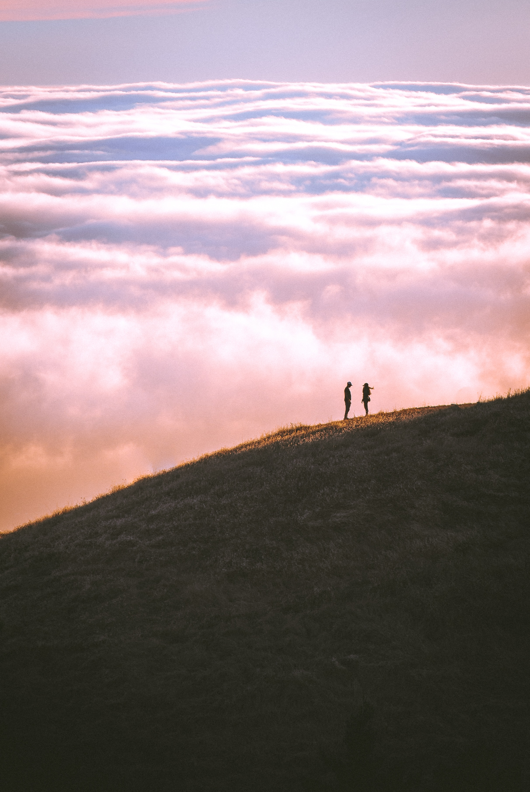

500 days of summer
If Tom had learned anything... it was that you can't ascribe great cosmic significance to a simple earthly event. Coincidence, that's all anything ever is, nothing more than coincidence... Tom had finally learned, there are no miracles. There's no such thing as fate, nothing is meant to be. He knew, he was sure of it now.

Carl sagan famous blue pale dot quote
We succeeded in taking that picture [from deep space], and, if you look at it, you see a dot. That's here. That's home. That's us. On it, everyone you ever heard of, every human being who ever lived, lived out their lives. The aggregate of all our joys and sufferings, thousands of confident religions, ideologies and economic doctrines, every hunter and forager, every hero and coward, every creator and destroyer of civilizations, every king and peasant, every young couple in love, every hopeful child, every mother and father, every inventor and explorer, every teacher of morals, every corrupt politician, every superstar, every supreme leader, every saint and sinner in the history of our species, lived there on a mote of dust, suspended in a sunbeam. The earth is a very small stage in a vast cosmic arena. Think of the rivers of blood spilled by all those generals and emperors so that in glory and in triumph they could become the momentary masters of a fraction of a dot. Think of the endless cruelties visited by the inhabitants of one corner of the dot on scarcely distinguishable inhabitants of some other corner of the dot. How frequent their misunderstandings, how eager they are to kill one another, how fervent their hatreds. Our posturings, our imagined self-importance, the delusion that we have some privileged position in the universe, are challenged by this point of pale light. Our planet is a lonely speck in the great enveloping cosmic dark. In our obscurity -- in all this vastness -- there is no hint that help will come from elsewhere to save us from ourselves. It is up to us. It's been said that astronomy is a humbling, and I might add, a character building experience. To my mind, there is perhaps no better demonstration of the folly of human conceits than this distant image of our tiny world. To me, it underscores our responsibility to deal more kindly and compassionately with one another and to preserve and cherish that pale blue dot, the only home we've ever known.

Master the day
You are not going to master the rest of your life in one day. Just relax. Master the day. Then just keep doing that everyday.
Sigmund Freud
One day in retrospect, the years of struggle will strike you as the most beautiful.

Educate yourself
When a question about a certain topic pops up, google it. Watch movies and documentaries. Take a course. When something sparks your interest, read about it. Read read read. Study, learn, stimulate your brain. Dont just rely on the school system, or what others tell you. Educate that beautiful mind of yours.

Read a lot
Read books. Go to museusms Watch documentaries. educate yourself. You dont need to go to an ivy league school to be cultured. You dont need money to understand how the world works. You just need to put yourself first, and grab all the opportunities that comes your way.

Quotes from scent of a women
Have you ever buried your nose in a mountain of curls... just wanted to go to sleep forever? Or lips... and when they touched, yours were like... that first swallow of wine... after you just crossed the desert.

Mindfulness
Expect the best, prepare for the worst and accept what comes first.

Life is a mystery yet to unfold
The reality is, life is a single-player game. You’re born alone. You’re going to die alone. All of your interpretations are alone. All your memories are alone. You’re gone in three generations, and nobody cares. Before you showed up, nobody cared. It’s all single-player.

importance of self discipline
the virtue of self discipline itself is a greater source of pleasure than the external objects of our desire.

Responsibility
No one is coming to save you. This life is 100% your responsibility.

Desire of self destruction
your worst sin is that you destroyed and betrayed yourself for nothing.

Light of hope
It is during our darkest moments that we must focus to see the light.

Do the work
Our actions matters more than our intentions.

my mind should be in my control
I, and I alone, am responsible for everything I think and feel.

Sacrifice anything to live your dream life
Discipline is choosing between what you want now and what you want most.

Practice and consistancy can do wonders
The successful warrior is the average man with laser-like focus.

live a disciplined life
nothing good in life comes without the mastery of self-discipline.

just keep going
Life is like riding a bicycle. To keep your balance, you must keep moving.